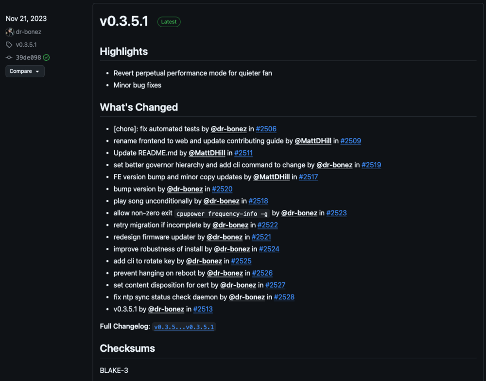
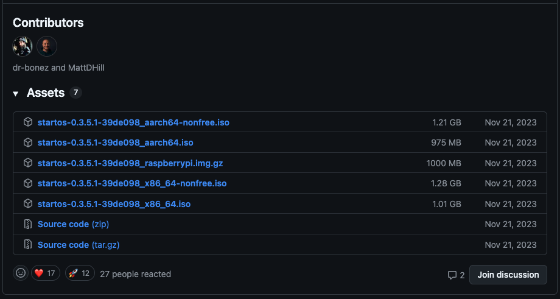
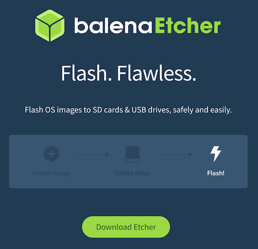
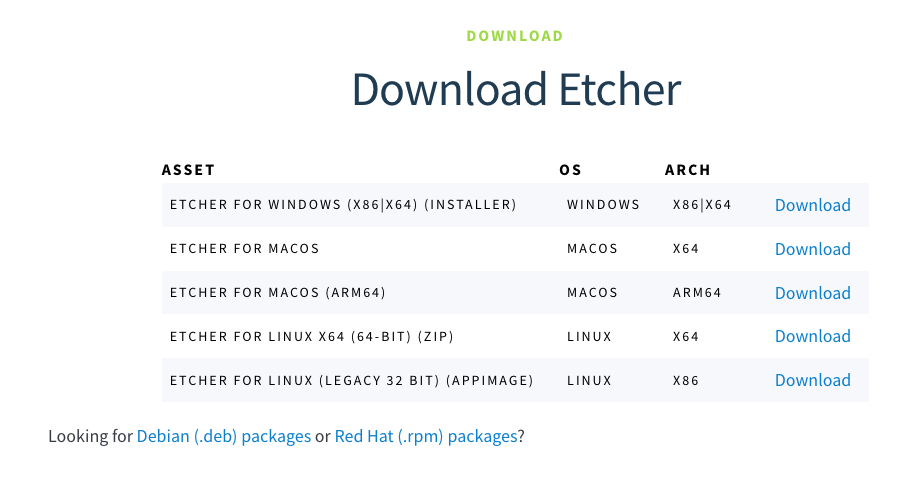
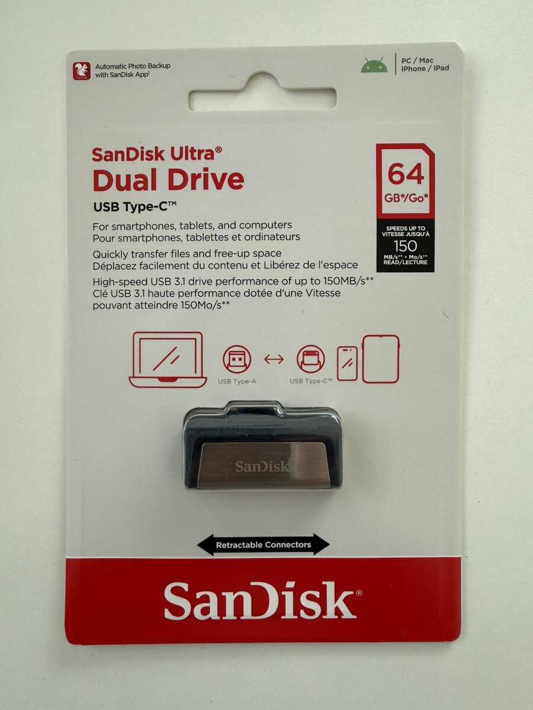
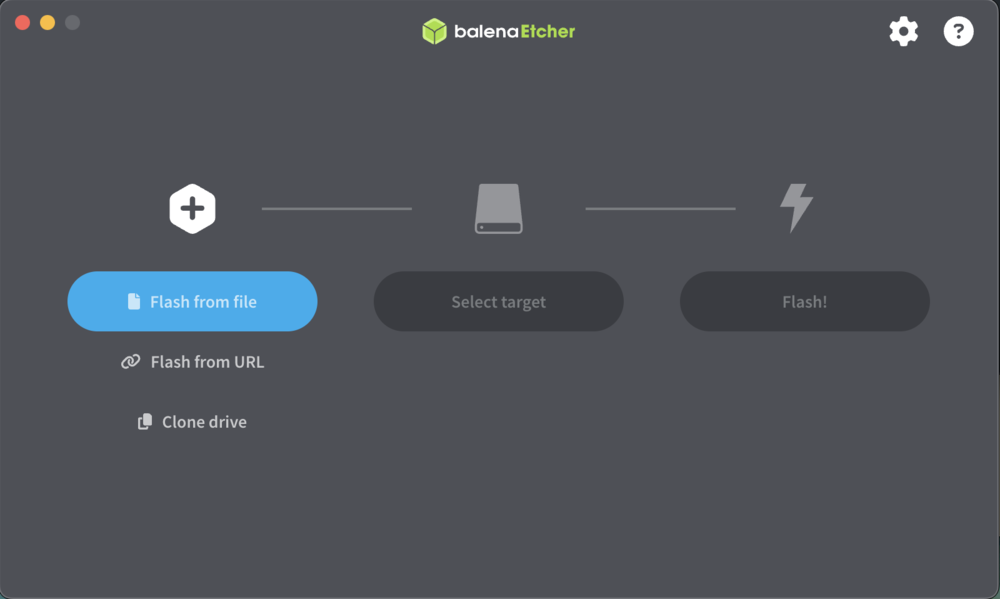

Flashing Start9 OS to USB Drive
This guide provides clear, step-by-step instructions for flashing the Start9 OS image to a USB drive using a Mac. This process prepares your USB drive for installing Start9 OS on your Mini PC or compatible server hardware.
In this guide, you will:
- Download the correct Start9 OS image
- Verify the image’s integrity (optional but recommended)
- Flash the image to a USB drive using Balena Etcher
- Safely eject and prepare the USB for installation
Pre-requisites
Preparation
- Use a Mac (Apple Silicon or Intel) with administrative access
- Ensure a stable, preferably wired, internet connection for large downloads
- Have at least 2–3 GB of free disk space in your Downloads folder
- Review hardware compatibility notes for your Mini PC (see below if using Proxmox VE)
Hardware
- MacBook Air M1 (or any Mac with Apple Silicon or Intel)
- Tested on macOS Tahoe 26.1 (Apple Silicon, 16GB RAM)
- USB drive, 16GB minimum (e.g., SanDisk 64GB Ultra Dual Drive USB Type-C)
- Minisforum X1-255 Mini PC (or other compatible hardware for Start9 OS)
- Wired Ethernet connection (recommended for image download)
Software
- Start9 OS image (
.isofile to be flashed) - Balena Etcher (for flashing OS images to USB)
- Web browser (Safari, Chrome, or Firefox for downloading images)
- Terminal (for optional verification and disk management commands)
References
Step‑by‑Step Instructions
Step 1: Download Start9 OS Image
Download the Start9 OS image from the official GitHub releases page.
Understanding Version Types:
Start9 offers different release types on their GitHub page:
-
Stable Release: Thoroughly tested, production-ready versions
- Filename format:
startos-[version]-[commit]_x86_64.iso - Example:
startos-0.3.5.1-39de098_x86_64.iso - No “Pre-release” tag on GitHub
- Recommended for production use and maximum stability
- Filename format:
-
Alpha/Beta Release: Latest features, actively developed versions
- Filename format:
startos-[version]-alpha.[number]-[commit].dev_x86_64.iso - Example:
startos-0.4.0-alpha.15-24eb27f.dev_x86_64.iso - Marked with “Pre-release” tag (yellow label) on GitHub
- Includes
.devin filename - May have bugs, recommended for testing and learning
- Filename format:
For this guide, we’ll use the stable release (0.3.5.1) to maximize reliability while setting up a production-ready node.
Download Steps:
🌐 Download Integrity Notice: Use a wired connection when downloading the Start9 OS image to avoid corruption from unstable WiFi. On MacBook Air M1, ensure you have a stable internet connection.
-
Open Safari or your preferred browser and navigate to the Start9 download page: Start9 Download Page
-
Locate the latest stable release (no yellow “Pre-release” tag):
- Look for the newest tag without a Pre-release label (e.g., “0.3.5.1”)
- Stable builds are fully tested and recommended for production use

- Under the Assets section of the stable release, click to download:
- File name:
startos-0.3.5.1-39de098_x86_64.iso - Architecture: x86_64 (compatible with Minisforum X1-255)
- File size: ~1.1 GB
- File name:

💾 Storage Space Notice: Ensure your MacBook Air has at least 2-3 GB of free space in the Downloads folder for the Start9 OS image (actual size: ~1.1 GB).
- The download will begin automatically and save to your
~/Downloadsfolder
Wait for the download to complete before proceeding to the next step.
You can verify the download by running:
ls -lh ~/Downloads/startos-0.3.5.1-39de098_x86_64.iso
Expected output should show the file with a size of approximately 1.1 GB:
-rw-r--r-- 1 yourusername staff 1.1G Nov 27 10:30 startos-0.3.5.1-39de098_x86_64.iso
Verify file integrity (optional but recommended):
To ensure the downloaded ISO hasn’t been corrupted or modified, you can verify its SHA256 checksum:
- On the GitHub release page, look for the Checksums or Hashes section (usually in the release notes)
- Find the SHA256 hash for
startos-0.3.5.1-39de098_x86_64.iso - Run the verification command:
shasum -a 256 ~/Downloads/startos-0.3.5.1-39de098_x86_64.iso
- Compare the output with the hash provided on GitHub. If they match exactly, the file is genuine and uncorrupted.
# Expected output for version 0.3.5.1:
181fec43a3b7287fe6c6cdb70bcba79a5596fc2be1dbe5a54e09a4c142272155 startos-0.3.5.1-39de098_x86_64.iso
Step 2: Install Balena Etcher
Download and install Balena Etcher for Apple Silicon Macs:
- Open your browser and go to the Etcher download page: Etcher Download
- Click the Download Etcher button; you’ll be taken to the downloads page with several platform options. Choose macOS (Apple Silicon/ARM64).
🍏 Apple Silicon Notice: Balena Etcher for Apple Silicon (ARM64) runs natively on M1 Macs for optimal performance.


- The file will download as
balenaEtcher-2.1.4-arm64.dmgto your Downloads folder - Open the downloaded
.dmgfile from your Downloads folder:
open ~/Downloads/balenaEtcher-*.dmg
-
Drag the balenaEtcher app icon to your Applications folder
-
Eject the Balena Etcher disk image from Finder
- In Finder’s sidebar under “Locations”, select the mounted Etcher disk (e.g., “balenaEtcher”)
- Click the eject icon (⏏) next to the mounted disk, or right‑click and choose Eject
- Alternatively, on the Desktop, drag the mounted Etcher disk to the Trash (which turns into an Eject icon)
- Wait for the volume to disappear from the sidebar/Desktop before proceeding
-
Open Balena Etcher from your Applications folder or Launchpad
-
If macOS shows a security warning, click Open to confirm you want to run the app
🔒 Permissions Notice: You may need to grant Balena Etcher disk access permissions in System Settings > Privacy & Security > Full Disk Access if prompted.
Verify Balena Etcher integrity (optional but recommended):
You can verify the Balena Etcher DMG file using SHA256 checksum. Choose one of the following options:
Option 1: Using the official SHA256SUMS file
- Visit the Etcher ARM64 release page: Etcher v2.1.4 (ARM64) release
- Download the file SHA256SUMS.Darwin.arm64.txt from the Assets section
- Calculate the hash of your downloaded file:
shasum -a 256 ~/Downloads/balenaEtcher-2.1.4-arm64.dmg
- Compare the output with the hash in the SHA256SUMS file:
cat ~/Downloads/SHA256SUMS.Darwin.arm64.txt
If they match, the file is genuine and uncorrupted.
Option 2: Verify from GitHub release page
- Visit the Etcher ARM64 release page: Etcher v2.1.4 (ARM64) release
- Look for the SHA256 hash for
balenaEtcher-2.1.4-arm64.dmgin the release notes or checksums section - Calculate the hash of your downloaded file:
shasum -a 256 ~/Downloads/balenaEtcher-2.1.4-arm64.dmg
- Compare the output with the hash from Etcher ARM64 release page. If they match, the file is genuine and uncorrupted.
💽 File Format Notice:
- A
.dmgfile is a macOS disk image. When you open it, macOS mounts it like a virtual drive containing the application.- After opening the
.dmg, complete installation by dragging the balenaEtcher app intoApplications. You can then eject the mounted disk image.
Step 3: Insert the USB Drive
Connect your USB drive to your MacBook Air:

-
The SanDisk Ultra Dual Drive supports both USB‑C and USB‑A connectors. Connection speed considerations:
- USB‑C (recommended): Provides speeds up to 5 Gbps — flashing typically completes in 30 seconds to 2 minutes
- USB 3.0 or higher: Provides speeds up to 5 Gbps — expect 1-3 minutes for flashing
- USB 2.0: Will work but is significantly slower (up to 480 Mbps). Expect longer flashing times (10-20 minutes)
-
Plug the drive in and wait a few seconds for macOS to recognize it.
-
A new volume should appear on your Desktop or in Finder’s sidebar
You can verify the USB drive is detected by running:
diskutil list
Look for your USB drive in the output (e.g., /dev/disk2, /dev/disk3, or /dev/disk4). Note the disk identifier for reference.
Example output:
/dev/disk4 (external, physical):
#: TYPE NAME SIZE IDENTIFIER
0: FDisk_partition_scheme *64.0 GB disk4
1: Windows_FAT_32 SANDISK 64.0 GB disk4s1
Step 4: Flash the Image
🗑️ Data Loss Warning: Flashing will erase all data on the USB drive. Make sure it does not contain important files before proceeding.
Use Balena Etcher to write the Start9 OS image to your USB drive:
- Open Balena Etcher from your Applications folder
- Click Flash from file button
- Navigate to your Downloads folder and select:
startos-0.3.5.1-39de098_x86_64.iso - Click Select target button
- Choose your SanDisk USB drive from the list (be careful to select the correct drive!)

- Click Flash! to begin the flashing process
- macOS will show a popup asking for permission for Balena Etcher to access and write to the external USB drive. Click OK or Allow to grant permission.
- Enter your Mac password when prompted (required for disk write access)
- The flashing process will begin, showing progress and estimated time remaining
- Wait for the process to complete (typically 30 seconds to 3 minutes with USB-C, or 5-15 minutes with USB 2.0)
- Balena Etcher will automatically verify the written data to ensure integrity
- Once you see Flash Complete!, the USB drive is ready
💿 Boot Image Notice: After flashing completes, macOS may show a popup saying “The disk you inserted was not readable by this computer” with options to Initialize, Ignore, or Eject. This is normal and expected. The USB drive now contains a Linux-based boot image that macOS cannot read. Click Ignore or Eject. Do not click Initialize as it would erase the StartOS image.
Step 5: Safely Eject the USB Drive
If you clicked Eject in the macOS popup from previous step, the USB drive has already been ejected and you can skip to physically removing it. Otherwise, follow one of the options below to properly eject the USB drive to prevent data corruption:
Option 1: Using Finder
- Open Finder
- Locate your USB drive in the sidebar (under “Locations”)
- Click the eject icon (⏏) next to the drive name
- Wait for the drive to disappear from the sidebar
- Physically remove the USB drive from your MacBook Air
Option 2: Using Terminal
- First, identify your disk with:
diskutil list
- Eject the disk (using your disk identifier, in this case
disk4):
diskutil eject /dev/disk4
- You should see:
Disk /dev/disk4 ejected
- Physically remove the USB drive from your MacBook Air
The USB drive is now ready to be used as a boot drive for installing Start9 OS on the Minisforum Mini PC.
🔄 USB Drive Usage Notice: This USB drive is only needed for the initial installation. For my setup, it is also used to install Proxmox VE due to hardware compatibility. After Start9 OS is installed on the Mini PC’s SSD (or as a VM in Proxmox VE), the USB drive can be reused for other purposes.
👈 Prev: Setting up Hardware with AT&T BGW320 (Fiber 1 GIG)
👉 Next: Inspecting Minisforum Hardware